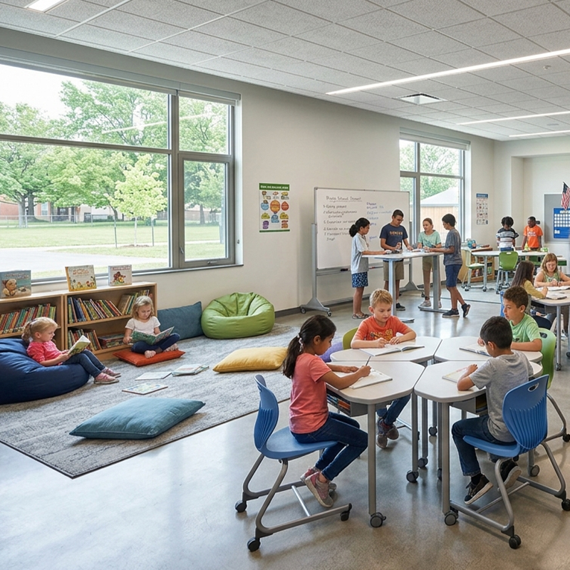
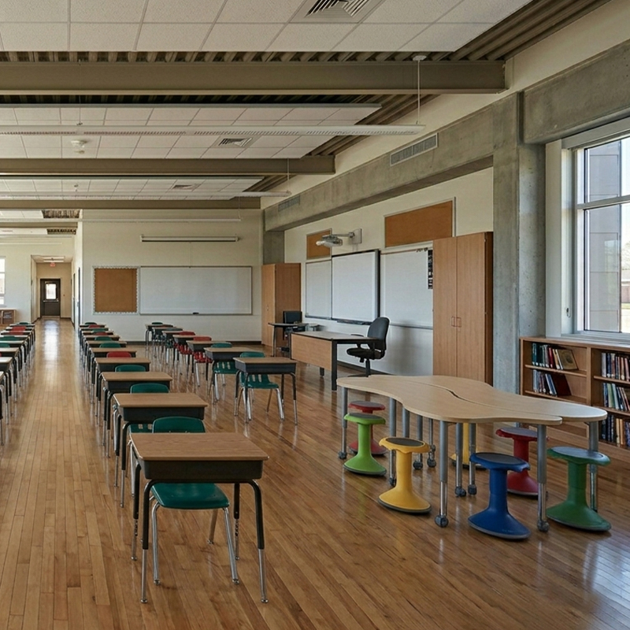
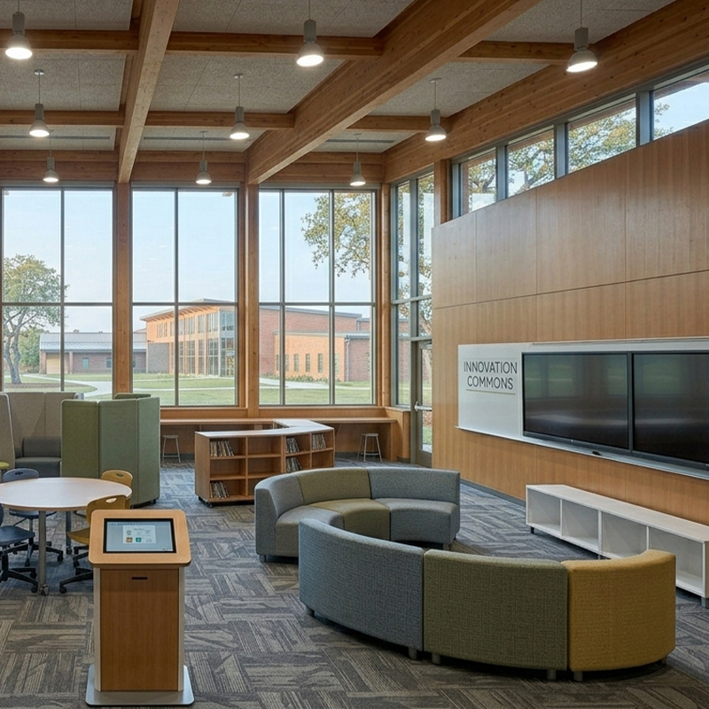
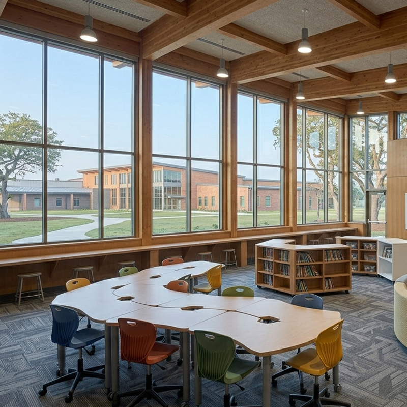

Los escritorios escolares flexibles crean un cuarto de estudio que crece con los niños. La altura regulable acompaña al alumno desde los primeros deberes en primaria hasta el bachillerato, evitando tener que renovar el mobiliario en cada etapa. La superficie antirrayas soporta libros, tablets y manualidades, y la silla ergonómica con respaldo flexible cuida la espalda durante las horas de tarea. Un conjunto pensado para el estudio en casa que combina funcionalidad, seguridad y un diseño que encaja en cualquier habitación.
La altura regulable del escritorio se ajusta en segundos para acompañar el crecimiento del niño. Se empieza con la mesa baja en primaria y se sube hasta la altura adulta en secundaria, evitando la compra de un escritorio nuevo en cada etapa escolar.
La silla ergonómica con respaldo flexible se adapta a los movimientos del niño durante el estudio. La basculación suave alivia la presión lumbar y ayuda a mantener la concentración en las horas de deberes.
La superficie antirrayas resiste el uso diario con lápices, rotuladores, tijeras y reglas. Los derrames de bebida se limpian con un paño húmedo y los colores de la melamina no pierden intensidad.
El cajón inferior guarda el material escolar a mano: lápices, cuadernos, tablet y documentos. La bandeja portaobjetos y el organizador de escritorio se colocan bajo el tablero sin ocupar superficie de trabajo.
El conjunto se adapta a habitaciones pequeñas con modelos de escritorio de esquina o con estantería incorporada, maximizando el espacio disponible sin renunciar a una zona de estudio completa.
| Modelo | Altura | Silla | Espacio |
|---|---|---|---|
| Escritorio básico | Fija | Silla estándar | Cuartos pequeños |
| Regulable | 46-76 cm | Ergonómica | Crece con el niño |
| Con estantería | Regulable | Ergonómica | Cuartos medianos |
| De esquina | Regulable | Ergonómica | Aprovecha huecos |
| Material | Tablero MDF E0 con melamina antirrayas |
| Medidas | 100-120 × 60 cm, altura regulable 46-76 cm |
| Silla | Respaldo flexible, altura de asiento regulable |
| Cajón | Incluido, con cierre suave |
| Acabados | Blanco, madera clara, azul, rosa (personalizable) |
| Montaje | Manual ilustrado, unos 30 minutos |
| Garantía | 2 años en estructura |
Cuarto de estudio del niño: escritorio regulable y silla ergonómica para los deberes de primaria y las tareas de secundaria.
Rincón de estudio en el salón: escritorio compacto para que los pequeños hagan los deberes acompañados por los padres.
Habitación compartida: dos escritorios individuales para hermanos, con cajones independientes para cada uno.
Se recomienda que los codos del niño queden a la altura del tablero con los hombros relajados. Cuando el niño crece unos 10 cm o sus pies dejan de llegar al suelo con la silla ajustada, es el momento de subir la mesa.
Sí, la silla tiene altura de asiento regulable y respaldo flexible. El rango de ajuste cubre desde los 6 hasta los 16 años aproximadamente, acompañando el crecimiento del estudiante.
Por supuesto. La superficie antirrayas y lavable es ideal para manualidades, plastilina y pintura. Se recomienda cubrir la mesa con un mantel de protección para actividades muy sucias y guardar el material en el cajón.
Este producto también está disponible en versión profesional para colegios e instituciones: Ver versión escolar →
Reciba información detallada de todos nuestros productos de mobiliario escolar.
📋 Solicitar catálogo